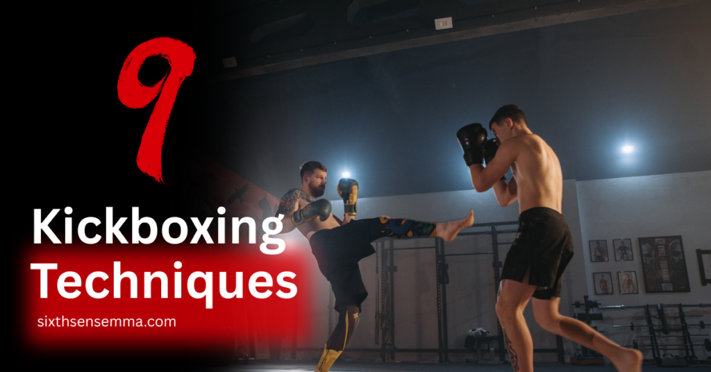
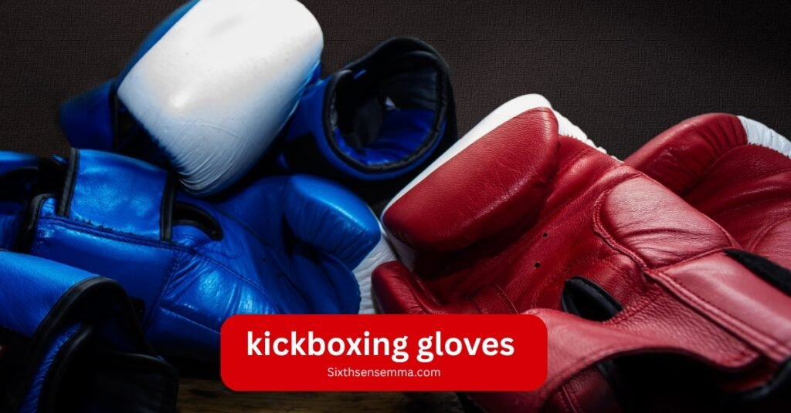

Top 9 Kickboxing Techniques Every Fighter Must Know

Kickboxing techniques are the foundation of every great fighter’s skill set. Whether you’re just starting out or stepping up to advanced drills, mastering the basics like the jab cross combo and progressing into powerful moves like roundhouse kicks or spinning back kicks is essential. The key isn’t just power it’s precision, timing, and form.
A smart training routine blends simple, repeatable drills with dynamic combinations to keep your technique sharp and unpredictable in the ring. With the right balance of fundamentals and advanced strikes, you’ll build confidence, control, and knockout power.
Kickboxing Techniques Table with Characteristics and Primary Targets
This table is designed to provide a clear, easy-to-follow breakdown of 9 key kickboxing techniques, highlighting their unique characteristics, primary targets, and ideal use in combat. It serves as a valuable reference for fighters and coaches looking to optimize training, improve precision, and better understand the execution of each kick.
| Numbers of Techniques | Techniques Name | Characteristics | Primary Targets |
|---|---|---|---|
| 1 | Roundhouse Kick | Circular motion, shin/instep strike | Thighs, ribs, head |
| 2 | Hook Low Kick | Curved trajectory, low height | Thighs, calves |
| 3 | Hook Punch | Horizontal arc, bent elbow | Jaw, temple |
| 4 | Front Kick | Linear thrust, ball of foot | Midsection, face (push kick) |
| 5 | Spinning/Reverse Side Kick | 360° rotation, heel strike | Head, ribs |
| 6 | Side Kick Basics | Chambered knee, heel thrust | Ribs, solar plexus |
| 7 | Back Kick | Blind-side attack, heel strike | Body, head (if timed) |
| 8 | Hook | Short-range, body rotation | Head/body (close range) |
| 9 | Uppercut | Vertical rising motion | Chin, solar plexus |
1-Roundhouse Kick
The roundhouse kick is a circular motion powerhouse master it to dominate in kickboxing. Start with proper alignment: rotate your supporting foot outward for hip mobility, then swing your leg in a tight arc, driving through with strength from your midsection.
Aim to land with the top of your shin (not the foot) for effective, power strikes. The key? Snapping the kick at the target don’t just rely on swinging momentum. Train this in daily drills to sharpen striking ability while keeping safety in mind.
2-Hook Low Kick
The hook creates the opening, the low kick weakens, the cross seals it Pivot sharply on the low kick for maximum powerUse this in the ring to dismantle static opponents
This brutal combination establishes dominance by attacking multiple levels
3-Hook Punch
Hook Punch (also known as a Body Hook or Liver Hook) is a powerful curved strike targeting the opponent’s side either the ribs (especially the liver) or the head.
Low Kick:
Immediately chop their exposed thighs or legs
Weakens their base for the finish
Cross:
As they stagger from the kick, blast a straight strike to the jaw
4-Front Kick
The front kick (or “Tep” in Muay Thai) is your ultimate distance weapon jam it into your opponent’s midsection, chest, or face to control the ring. Plant your bottom of foot on target, extend your leg with hip flexors engaged, then retract fast to reset. Key details .
Chamber the knee high first for strength, drive through with quads and hamstrings, and push with your hip don’t just strike. Done right, it interrupts forward movement, wrecks balance, and creates space to dominate.
5-Spinning/Reverse Side Kick
The spinning/reverse side kick is a spearb like thrust of power, blending rotational momentum with straight line force aim for the midsection, head, or thigh to hit hard.
Spin with precision: Pivot on your lead foot, chambering your knee as you rotate (skip the telegraphing by keeping shoulders relaxed)Thrust your heel in a spear motion power comes from hip drive, not just leg strength.Snap the kick out and back (fluid retraction = faster transitions).
Pro Tips:
Time it when opponents step away their forward momentum amplifies impact.
Drill the spin separately before adding the kick (jumping drills improve balance).
Target cheeks (body or face) for maximum fight ending potential.
For more details:Mixed Martial Arts Training Gloves: Types, Use & Top Brands
6-Side Kick Basics
The side kick is all about linear, explosive power thrust your heel straight through targets like the ribs, solar plexus, or even head (if you’ve got the flexibility). Here’s how to weaponize it.
Chamber your knee high and square your hips sideways this angled position is your power source.
Extend your leg in a straight line, push through with glutes and core tightened for solid impact.
Blast through the target, then snap back to chamber don’t let your leg linger.
Training tips:
- Stretch regularly to maintain sideways mobility
- Practice against pads to develop knock out force
- Use it to push opponents back or break their balance
7-Back Kick
The back kick is a deadly, unexpected weapon when timed right it turns your heel into a knockout thrust aimed at target areas like the solar plexus, body, or even head.
Here’s how to make it explosive:
Pivot on your lead foot, turning your shoulder and hip toward the target (this hides the kick to avoid telegraphing).
Drive your rear leg straight back like a piston, using hip drive and strong core tension as your strength source. Strike with the heel, then quick retract to maintain balance no lazy follow through.
Training tips:
- Use balance drills to master the spin motion
- Build muscle memory by practicing the pivot first, then add power
- Keep it stealth the element of surprise is what makes it lethal
8-Hook
The hook is one of the most powerful and fight ending punches in kick boxing when thrown correctly, it rattles your opponent to the core. Start by rotating your entire body into the punch: pivot your lead foot, drive your hips through, and keep your elbow bent at a sharp 90 degree angle. This isn’t just an arm punch it’s a full body motion that generates serious force.
Pro tip:
Keep your non punching hand up to guard, and avoid overreaching tight form equals better impact and faster recovery.
Train it slow, master the motion, and then turn up the speed. A well timed hook can end a fight in seconds.
9-Uppercut
The uppercut is your close range weapon perfect for catching opponents off guard when they drop their hands or lean in. Start by bending your knees slightly, keeping your stance solid and balanced. From there, explode upward through your legs, using your hips and core to generate force not just your arms.
Keep it tight:
The uppercut isn’t a wild swing. It’s a controlled, vertical strike that drives straight up the middle, aiming for the chin or under the guard. Elbow stays close to the body, and the punch flows from your legs through the shoulder.
Kickboxing Footwork Techniques for Real Movement
Footwork separates champions from brawlers. Train these essential techniques daily:
- Agility Ladder Drills : Develop lightning speed and sharp directional changes. Stay on the balls of your feet.
- Pivot & Strike Combos : Plant, rotate 45 degrees, then fire precise kicks. Teaches fight ending angle creation.
- Shadowboxing with Resistance Bands : Forces fluid movements under tension. Builds fight ready muscle memory.
Pro Tip: Film your sessions what feels fluid often looks sloppy. Refine until every step is precise.
Side Stepping to Create Openings
True fight IQ shows in your lateral movement the ability to shift side to side with controlled precision opens brutal counter angles. Practice throwing jabs while sliding offline, then snap a cross through the newly created gap.
For power shots, use a small hop step to maintain balance as you angle out after hooks, keeping your feet under you at all times.
Drills should focus on quick direction changes have a partner charge forward while you evade and counter, reinforcing real fight applications. The key is making these movements effective without crossing your feet or overcommitting, turning defense into attacks seamlessly.
Shadowbox with intent, visualizing an opponent’s strikes as you cut angles, and over time, this footwork will become second nature, allowing you to dictate the fight’s flow.
Pivoting to Angle Out of Strikes
Pivoting is the ultimate evasive maneuver a strategic redirection that turns defense into offense. Plant your lead foot and rotate sharply on the ball of your foot, using that planted base to swing your body 90 degrees out of danger.
This technique lets you change directions instantly while maintaining perfect balance, slipping punches and setting up counter kicks simultaneously. Stay light on your feet agile movements come from bent knees and active toes, not flat footed turns.
Drill this by having a partner throw jabs while you pivot and return fire, focusing on control rather than speed at first. Master this, and you’ll never be where your opponent’s strikes land.
Moving With Purpose: Blending Power and Agility
Elite athletes know every step must serve a purpose whether creating explosive angles or maintaining solid position in the ring. This isn’t just movement; it’s body control weaponized. Start with footwork drills that demand sudden bursts of power like sprinting into stance between combos.
Then refine your mobility with lateral hops that keep you balanced yet ready to strike. The key? Your base should be spring loaded knees slightly bent, weight centered, capable of shifting from defense to offense in one explosive step. Partner drills where you mirror then counter attacks will train this reflex until it’s second nature. Remember: in kickboxing, you’re either controlling space or being controlled.
Kickboxing Equipment and Safety Essentials
Before throwing a punch or kick, you’ve got to gear up and prepare your body. The right equipment not only protects you it boosts your confidence and helps you train smarter.
Protective Gear You Need
Proper protective gear protects both you and your training partner. Here’s the must have kit:
- Gloves & Hand Wraps
Gloves cushion your striking hand and support your wrist. Hand wraps add extra stability and shock absorption.
- Hand Wraps
Whether you’re hitting bags or sparring, gloves (10‑16 oz) combined with snug hand wraps are essential.
- Shin Guards:
They absorb the heavy impact from kicks and leg checks. Look for padded, secure fit to prevent them from shifting mid movement .
Mouthguard
This is non negotiable for sparring. It protects your teeth and jaw from hard hits. Boil and bite mouthguards give a snug, custom fit.
- Headgear
Ideal for reducing cuts, bruises, and surface level head injuries. Look for full coverage foam padding and secure straps
- Groin (and Chest) Guards
Groin cups protect sensitive areas during sparring. For contact heavy training, body/chest protectors are smart investments, especially in Muay Thai
- Gear maintenance safety
Let your gear air dry, clean regularly, and replace when worn out to prevent injury and bacteria growth .

Why Choose Sixth Sense MMA for Professional Kickboxing Coaching
You’ll learn how to strike with proper form, move with purpose, and stay calm under pressure. From footwork and timing to advanced combos and defense drills, every session is designed to make you sharper, stronger, and more confident. We keep our training practical built for the ring, self defense, or simply becoming the best version of yourself.
At Sixth Sense MMA, you don’t just train you grow as a fighter, one round at a time.At Sixth Sense MMA, we focus on real growth not just drills. Our coaching is hands on, built for all levels, and centered on your personal progress.
Benefits of Kickboxing Techniques:
- Learn correct striking form, footwork, and defense from experienced coaches
- Small class sizes for personalized attention
- Real sparring sessions to build timing and fight IQ
- Focused drills for strength, cardio, and precision
- Safe, clean training environment with professional grade equipment
- Supportive, respectful team culture no egos
- Coaches who care about your mental and physical progress
- Flexible schedules for students, professionals, and working athletes
- Real fight experience shared directly with you
- Proven training programs designed for results, not hype
Ready to Start? Contact Us Today
Have questions or ready to book your first session? Click here to get in touch with Sixth Sense MMA we’re here to help you begin.
What Our Students Say
“This is the first gym where I actually feel seen. The coaches care and it shows in every session.” – Aiden M.
“Sixth Sense MMA gave me the confidence I never knew I had. Real training, real results.” – Jasmin T.
“The coaching style here is personal and sharp. No fluff, just skill.” – Khalid R.
“I came in as a beginner and left my first class feeling motivated and focused.” – Mark B.
“Great environment. You learn discipline, technique, and mental strength.” – Sophie H.
“Every session pushes you—but in a way that builds you. It’s addictive in the best way.” – Leo W.
“Best kickboxing training I’ve experienced. Structured and clear.” – Daniella K.
“Trainers here explain everything without making it feel overwhelming.” – Rahim U.
“Solid routines, intense workouts, and smart techniques. I improved fast.” – Emily Z.
“I train here three times a week and still look forward to every class.” – Andre L.
Conclusion
Kickboxing isn’t just a dynamic sport it’s a high energy pursuit of growth, demanding mental conditioning as much as physical strength. True dominancy comes from pushing limits: refining advanced skills through consistent technique, explosive striking power, and razor sharp footwork.
Every training routine must challenge you whether drilling strikes with speed and precision, or mastering breathing under fatigue. The ring reveals all; right equipment and determination mean nothing without continuous refinement. For fighters who improve relentlessly, kickboxing becomes more than a sport it’s a testing ground for the strong. Now go train.
FAQ’s
Start with core techniques like the jab-cross combo, roundhouse kick, hook punch, and front kick. These fundamentals build balance, control, and power—essential for developing effective combinations and mastering advanced strikes later.
Footwork is critical for creating angles, maintaining balance, and dictating the pace of a fight. Drills like agility ladders, pivot combos, and lateral hops train you to move with purpose and fluidity while avoiding attacks and launching counters.
This combination breaks guard and damages the opponent’s base. The hook distracts high, while the low kick targets the legs, weakening their stance. Add a cross after to finish strong and create fight-ending openings.
Punches like the hook and uppercut rely on full-body coordination. Drive through your legs and hips, not just your arms. Training proper technique under experienced coaching ensures maximum power with minimal injury risk.
Shadowboxing helps develop timing, rhythm, and movement fluency without the distraction of hitting targets. Adding resistance bands builds functional strength and improves muscle memory for real fight situations.
Sixth Sense MMA combines technical coaching, smart conditioning, and real sparring in a supportive, ego-free environment. Each class is tailored for individual progress, whether you’re a beginner or an advanced athlete.
Train with us in Coppell
The first class is free. Shorts, a t-shirt and a water bottle. We lend the rest.
Book a free class